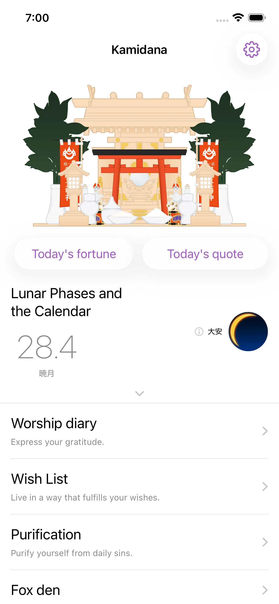
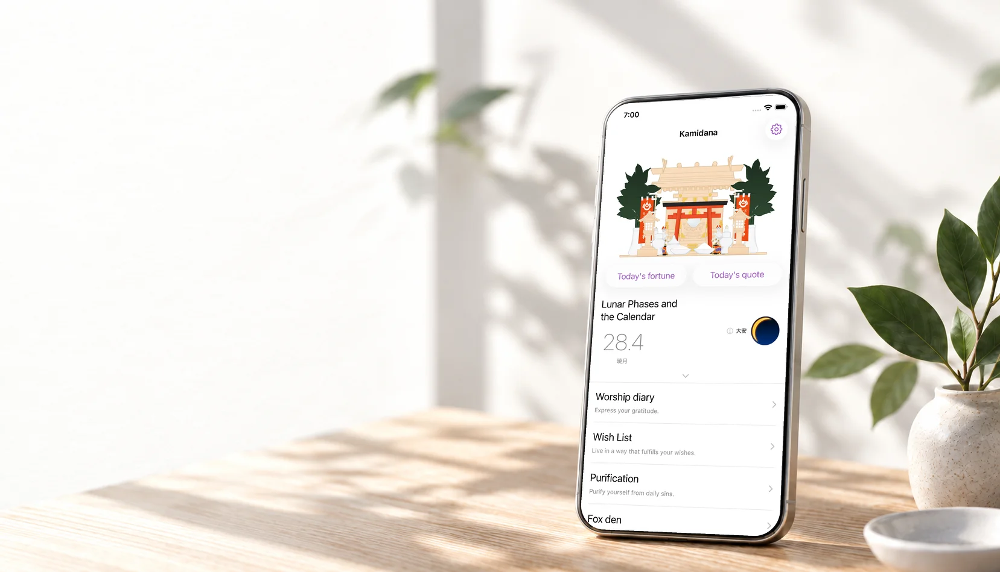
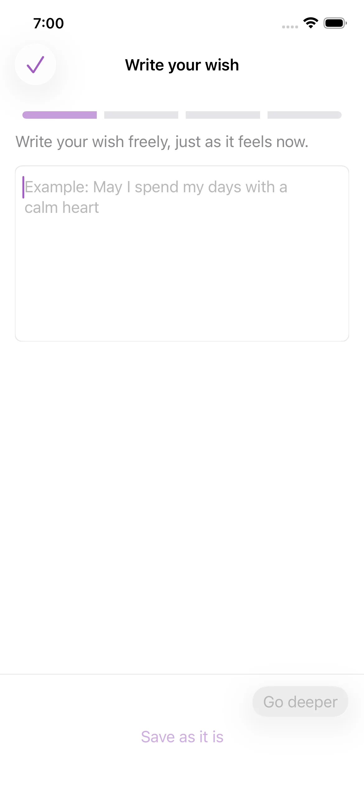

Pause and pray
Open your shrine, make an offering, or draw today’s fortune. Take a moment for the people and things you hold dear.

Make a wish, express gratitude,
and find a quiet moment
in your day.


Free to start · iPhone / Android · In-app purchases
A MOMENT TO YOURSELF
A wish for someone you love. A thank-you for a small kindness. A feeling you are ready to put down.
Inspired by the Japanese household shrine, Kamidana gives these moments a place in your day. Pause, pray, and return whenever you need a quiet moment.
YOUR DAILY RITUAL

Open your shrine, make an offering, or draw today’s fortune. Take a moment for the people and things you hold dear.

Write what you hope for, in your own words. A few words are enough to begin.
Place a worry or lingering feeling into a paper figure. The words disappear after a day, making room for a fresh start.
AT YOUR OWN PACE
A little space in your day, whenever you need it.
See the app for current pricing and availability.
MEDIA
Kamidana has appeared in these magazines and online publications.
January 2020 issue
Vol. 126 · March 2021
Online wellness magazine
App review site
For press, reviews, or collaborations, get in touch.
BEFORE YOU BEGIN
Kamidana draws on Shinto traditions of prayer and gratitude. You do not need special knowledge or a particular belief to begin. Make space for your wishes and gratitude in your own words.
The core features — prayer, wishes, purification, and journaling — are available for free. The Premium plan offers an ad-free experience, a calendar view, additional auspicious and inauspicious days, and special fox moments in the Fox Den, for users who want a quieter, more focused space.
Your prayers, wishes, and journal entries are stored only on your device. They are not uploaded to our servers and are never shown to other users. We also do not send this content to AI services or use it to train any AI models. Unless you create a backup yourself, your entries stay as notes known only to you and your phone.
Kamidana is designed around tiny actions — just one line, one small release. You do not have to write every day. Even if you open it only when you remember, each small line becomes a gentle record of your thoughts.
Use the backup and restore feature in the app settings before changing phones. The data you can transfer and the steps may vary by operating system and app version. Backup is available for free.
You can send a report from the app settings under Feedback / Contact. You can also use the Kamidana contact form. If possible, please include your device model, OS version, app version, and what you were doing when the issue happened. That helps us a lot.
Read our Privacy Policy for details about your data. For help, use the Kamidana contact form.
EXPLORE
Bring your wishes, your gratitude, and yourself.
Your little daily ritual can begin here.
Free to start · iPhone / Android · In-app purchases